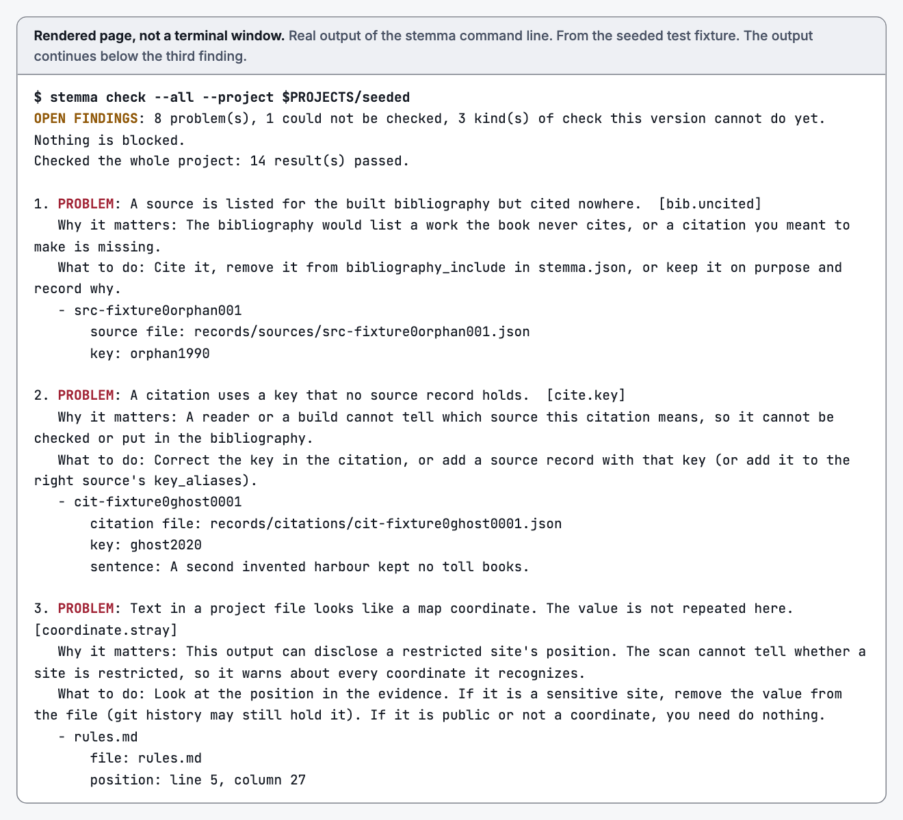
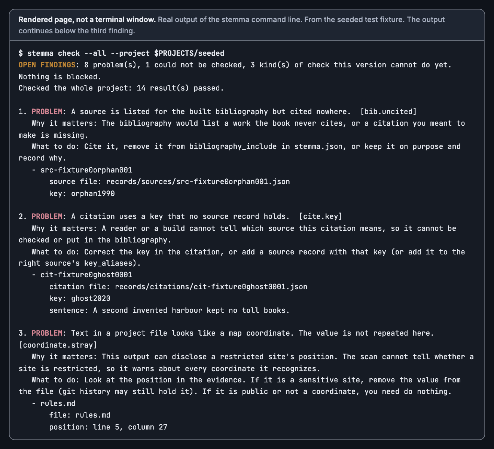
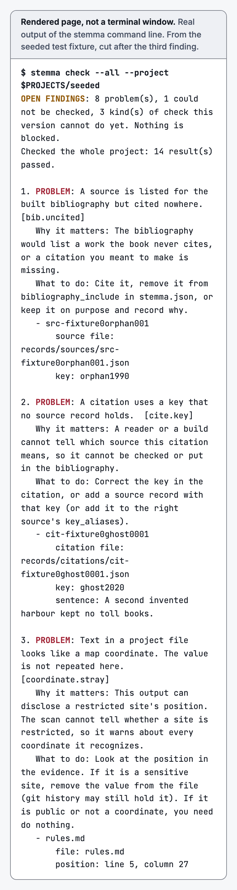

Examples
Real output, regenerated by one command from the demo and from the projects the tests assert on.
All names and sources here are invented. $DEMO, $PROJECTS and <plugin root> replace paths from the machine that ran the commands. Record IDs in the demo are fixed so that runs match; normally they are random.
Screenshots




The demo, step by step
1. Create a project and record two sources
$ stemma init --project $DEMO/book Created a Stemma project in $DEMO/book wrote rules.md wrote .gitattributes wrote .gitignore wrote stemma.json [exit 0] $ stemma record add source --input $DEMO/harbour.json --actor person:demo-author --project $DEMO/book Added src-demo0harbour01 records/sources/src-demo0harbour01.json No record problems found. [exit 0] $ stemma record add source --input $DEMO/orphan.json --actor person:demo-author --project $DEMO/book Added src-demo0orphan001 records/sources/src-demo0orphan001.json No record problems found. [exit 0]
2. Add two citations: one with a mistyped key
$ stemma record add citation --input $DEMO/cite-1.json --actor person:demo-author --project $DEMO/book Added cit-demo0toll00001 records/citations/cit-demo0toll00001.json No record problems found. [exit 0] $ stemma record add citation --input $DEMO/cite-2.json --actor person:demo-author --project $DEMO/book Added cit-demo0toll00002 records/citations/cit-demo0toll00002.json No record problems found. [exit 0] By hand: list both sources for the bibliography in stemma.json (orphan1990 is never cited).
3. Check: the seeded errors are reported and explained
$ stemma check --project $DEMO/book OPEN FINDINGS: 3 problem(s), 0 could not be checked, 3 kind(s) of check this version cannot do yet. Nothing is blocked. Checked the whole project: 13 result(s) passed. 1. PROBLEM: A source is listed for the built bibliography but cited nowhere. [bib.uncited] Why it matters: The bibliography would list a work the book never cites, or a citation you meant to make is missing. What to do: Cite it, remove it from bibliography_include in stemma.json, or keep it on purpose and record why. - src-demo0orphan001 source file: records/sources/src-demo0orphan001.json key: orphan1990 2. PROBLEM: A citation uses a key that no source record holds. [cite.key] Why it matters: A reader or a build cannot tell which source this citation means, so it cannot be checked or put in the bibliography. What to do: Correct the key in the citation, or add a source record with that key (or add it to the right source's key_aliases). - cit-demo0toll00002 citation file: records/citations/cit-demo0toll00002.json key: hartwel1998 sentence: The toll was doubled in the following century. 3. PROBLEM: A file is not written in the canonical form (key order, indentation or line endings differ). [record.valid] Why it matters: Digests, review marks and diffs depend on one exact form. No value is wrong because of this alone. What to do: Run `fmt` on the file. It rewrites the layout and changes no value. - stemma.json file: stemma.json NOT CHECKED: this version cannot yet check these, so the project is not called checked clean. Why it matters: a mistake of one of these kinds would go unnoticed. What to do: check them by hand where they matter. - authors, titles and dates against saved catalogue lookups [meta.resolver] - whether cited figures appear in the stored source text [number.present] - whether you hold a copy of each cited source, with its text extracted [source.held] For information, not a finding: 1 cited item(s) are unreviewed or not admitted. - src-demo0harbour01 (not admitted) No change baseline is kept yet, so the whole project was checked. Full report: $DEMO/book/.stemma/reports/check.json [exit 1]
4. Fix them: correct the key, drop the uncited listing, reformat
$ stemma fmt --project $DEMO/book Rewrote 1 file(s) in canonical form. stemma.json No record problems found. [exit 0] $ stemma check --project $DEMO/book OPEN FINDINGS: 0 problem(s), 0 could not be checked, 3 kind(s) of check this version cannot do yet. Nothing is blocked. Checked the whole project: 15 result(s) passed. NOT CHECKED: this version cannot yet check these, so the project is not called checked clean. Why it matters: a mistake of one of these kinds would go unnoticed. What to do: check them by hand where they matter. - authors, titles and dates against saved catalogue lookups [meta.resolver] - whether cited figures appear in the stored source text [number.present] - whether you hold a copy of each cited source, with its text extracted [source.held] For information, not a finding: 1 cited item(s) are unreviewed or not admitted. - src-demo0harbour01 (not admitted) No change baseline is kept yet, so the whole project was checked. Full report: $DEMO/book/.stemma/reports/check.json [exit 1] The seeded errors are gone. The project is still NOT called checked clean, on purpose: it cites a source, and this version cannot yet check some things about cited sources (listed under NOT CHECKED). Those count as open.
5. What checked clean looks like today: sources recorded, nothing cited yet
$ stemma init --project $DEMO/reading-list Created a Stemma project in $DEMO/reading-list wrote rules.md wrote .gitattributes wrote .gitignore wrote stemma.json [exit 0] $ stemma record add source --input $DEMO/harbour.json --actor person:demo-author --project $DEMO/reading-list Added src-demo0harbour01 records/sources/src-demo0harbour01.json No record problems found. [exit 0] $ stemma check --project $DEMO/reading-list CHECKED CLEAN: the checks found nothing open. This does not mean that the book is correct. It covers only what is in these project files. Checked the whole project: 6 result(s) passed. No change baseline is kept yet, so the whole project was checked. Full report: $DEMO/reading-list/.stemma/reports/check.json [exit 0] Note: this label says nothing about citations, because this project has none. Demo finished as expected. The files are in $DEMO
Test fixtures
Each has a text report below and the matching JSON report. In the JSON files, the run time, platform and SQLite version are removed.
seeded
Mistakes planted on purpose, one or more for each kind the tests expect. JSON report for seeded.
$ stemma check --all --project $PROJECTS/seeded OPEN FINDINGS: 8 problem(s), 1 could not be checked, 3 kind(s) of check this version cannot do yet. Nothing is blocked. Checked the whole project: 14 result(s) passed. 1. PROBLEM: A source is listed for the built bibliography but cited nowhere. [bib.uncited] Why it matters: The bibliography would list a work the book never cites, or a citation you meant to make is missing. What to do: Cite it, remove it from bibliography_include in stemma.json, or keep it on purpose and record why. - src-fixture0orphan001 source file: records/sources/src-fixture0orphan001.json key: orphan1990 2. PROBLEM: A citation uses a key that no source record holds. [cite.key] Why it matters: A reader or a build cannot tell which source this citation means, so it cannot be checked or put in the bibliography. What to do: Correct the key in the citation, or add a source record with that key (or add it to the right source's key_aliases). - cit-fixture0ghost0001 citation file: records/citations/cit-fixture0ghost0001.json key: ghost2020 sentence: A second invented harbour kept no toll books. 3. PROBLEM: Text in a project file looks like a map coordinate. The value is not repeated here. [coordinate.stray] Why it matters: This output can disclose a restricted site's position. The scan cannot tell whether a site is restricted, so it warns about every coordinate it recognizes. What to do: Look at the position in the evidence. If it is a sensitive site, remove the value from the file (git history may still hold it). If it is public or not a coordinate, you need do nothing. - rules.md file: rules.md position: line 5, column 27 4. COULD NOT CHECK: A file cannot be read as a record, so nothing in it was checked. [record.valid] Why it matters: Every other check reads these files. A broken record can hide a citation problem or create a false one. What to do: Open the named file and repair it (look for merge-conflict markers, a repeated key or a missing bracket), or restore it from git. Stemma does not guess its content. - records/agents/agt-fixture0broken001.json file: records/agents/agt-fixture0broken001.json problem: duplicate_key 5. PROBLEM: A rule ID in rules.md is used twice. [record.valid] Why it matters: A report or record citing this ID could mean either rule. What to do: Give the later rule a number that has never been used. - rules.md file: rules.md line: 7 6. PROBLEM: A file is not written in the canonical form (key order, indentation or line endings differ). [record.valid] Why it matters: Digests, review marks and diffs depend on one exact form. No value is wrong because of this alone. What to do: Run `fmt` on the file. It rewrites the layout and changes no value. - src-fixture0compact01 file: records/sources/src-fixture0compact01.json 7. PROBLEM: A record breaks a rule of the record format. [record.valid] Why it matters: Every other check reads these files. A broken record can hide a citation problem or create a false one. What to do: Correct the field named in the evidence, then run `check` again. - src-fixture0invalid01 file: records/sources/src-fixture0invalid01.json field: /admission problem: the value is not one of the allowed values 8. PROBLEM: A record has a field the record format does not define. The field is kept as it is. [record.valid] Why it matters: A misspelled field name means the value you meant to record is not read. What to do: Check the spelling. Put a field of your own under `x` with a namespaced name such as `myname.note`. - src-fixture0invalid01 file: records/sources/src-fixture0invalid01.json field: /tittle problem: the field is not part of the record format 9. PROBLEM: A record points at a record that is missing or is of the wrong kind. [record.valid] Why it matters: The link between your evidence and its source is broken, so anything relying on it cannot be traced. What to do: Point the reference at the right record, or remove it. - stemma.json file: stemma.json field: /bibliography_include/2 problem: no record has this ID points at: src-fixture0missing01 NOT CHECKED: this version cannot yet check these, so the project is not called checked clean. Why it matters: a mistake of one of these kinds would go unnoticed. What to do: check them by hand where they matter. - authors, titles and dates against saved catalogue lookups [meta.resolver] - whether cited figures appear in the stored source text [number.present] - whether you hold a copy of each cited source, with its text extracted [source.held] Full report: $PROJECTS/seeded/.stemma/reports/check.json [exit 1]
cited
One citation that resolves. It stays open because some checks of cited sources are not built. JSON report for cited.
$ stemma check --all --project $PROJECTS/cited OPEN FINDINGS: 0 problem(s), 0 could not be checked, 3 kind(s) of check this version cannot do yet. Nothing is blocked. Checked the whole project: 10 result(s) passed. NOT CHECKED: this version cannot yet check these, so the project is not called checked clean. Why it matters: a mistake of one of these kinds would go unnoticed. What to do: check them by hand where they matter. - authors, titles and dates against saved catalogue lookups [meta.resolver] - whether cited figures appear in the stored source text [number.present] - whether you hold a copy of each cited source, with its text extracted [source.held] Full report: $PROJECTS/cited/.stemma/reports/check.json [exit 1]
clean
Sources recorded and nothing cited, so it is called checked clean. The label says nothing about citations. JSON report for clean.
$ stemma check --all --project $PROJECTS/clean CHECKED CLEAN: the checks found nothing open. This does not mean that the book is correct. It covers only what is in these project files. Checked the whole project: 8 result(s) passed. Full report: $PROJECTS/clean/.stemma/reports/check.json [exit 0]
manuscript
A project with a manuscript file, which this version cannot read yet. JSON report for manuscript.
$ stemma check --all --project $PROJECTS/manuscript OPEN FINDINGS: 0 problem(s), 1 could not be checked, 11 kind(s) of check this version cannot do yet. Nothing is blocked. Checked the whole project: 7 result(s) passed. 1. COULD NOT CHECK: Whether a listed source is cited could not be checked: this version cannot yet read the files in manuscript/. [bib.uncited] Why it matters: The manuscript, not the citation records, says what is cited now, so a guess could be wrong either way. What to do: Nothing to fix in your files. Check this entry by hand until Stemma reads manuscripts. - src-fixture0harbour01 source file: records/sources/src-fixture0harbour01.json key: hartwell1998 NOT CHECKED: this version cannot yet check these, so the project is not called checked clean. Why it matters: a mistake of one of these kinds would go unnoticed. What to do: check them by hand where they matter. - bibliography entries that are never cited [bib.uncited] - citation keys in the manuscript files [cite.key] - citations not linked to any claim [cite.unlinked] - manuscript text linked to a retired claim [claim.inactive] - passages marked as needing a source [draft.marked] - whether DOIs and other identifiers name these works [id.resolves] - whether cited pages and other locators fall inside the source [locator.extent] - authors, titles and dates against saved catalogue lookups [meta.resolver] - whether cited figures appear in the stored source text [number.present] - whether quotations appear in the stored source text [quote.present] - whether you hold a copy of each cited source, with its text extracted [source.held] Full report: $PROJECTS/manuscript/.stemma/reports/check.json [exit 1]